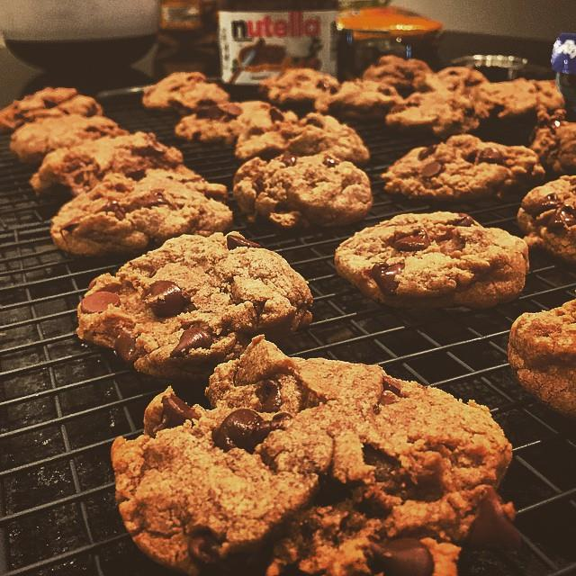

Home || More Info
Who am I?
My name is Andrew Romanyk but I go by Drew. I'm a Mobile & Web developer and I love every second of it! I like to dance and bake, these are very fun hobbies as you can express yourself in new and creative ways. I'm also president of an organization called MAD that helps teach students how to learn to program mobile apps.
My Work Experience
Favorite links to websites I frequent
- I love to catch up on news and see funny things on Reddit.
- Netflix TV shows, such as House of Cards, is pretty awesome.
- Google is such an amazing tool that has dramatically made my life easier.
Contact me via links below
drew.romanyk@utexas.eduMy Github Profile
My Linked In Profile